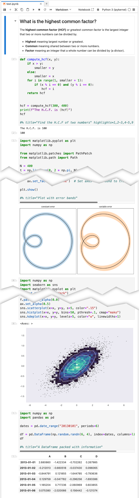

PresentPy
Create slides from Jupyter Notebooks
PresentPy allows you to take your Jupyter Notebooks and turn them into slides (compatible with PowerPoint, Keynote, LibreOffice...) that then can be integrated into your presentation decks.
Installation
I strongly recommend using pipx to install PresentPy:
Otherwise, you can install it using pip or your favorite package manager – the package is called presentpy.
Usage
To turn a notebook into slides, simply run:
Usage: presentpy [OPTIONS] NOTEBOOK
A CLI tool to convert Jupyter Notebooks to slides.
Options:
--output PATH Directory or file path where the output ODP file will be
saved. Defaults to the current directory.
--theme TEXT Pygments style to be applied to the presentation.Defaults to
'default'. See https://pygments.org/docs/styles/ for
available styles.
--outputs Include code cell outputs in the presentation.
--help Show this message and exit.
Code configuration
You can configure the code cells to be displayed in the slides by adding a comment on the last line of the cell. The comment should start with #% and then you can add the following options:
title: The title of the slidehighlights: A comma separated list of lines to highlight, each highlight could be a number or a range of lines separated by a dash, e.g.1,3-6,6-7
Example
Consider the notebook shown below, when converted to slides using the default theme, it will look like the first image in the table below. When converted using the fruity theme, it will look like the second image.
| Original notebook [view .ipynb] | |
|---|---|
|  | |
| Default theme [as PDF] [as Google Slides] | Fruity theme [as PDF] [as Google Slides] |

|
|

|
|
| Slides omitted as the only change is the highlighting of the code. | |

|
|

|
|
You can then use these slides in your presentation deck.